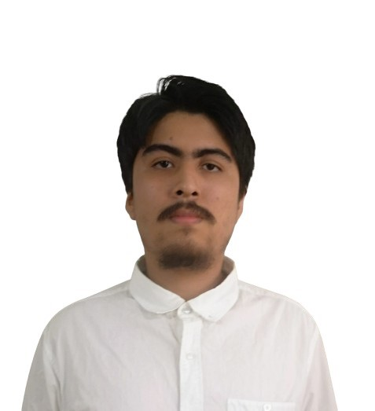
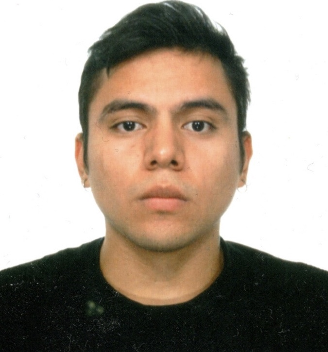
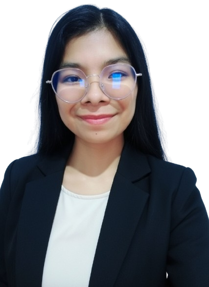
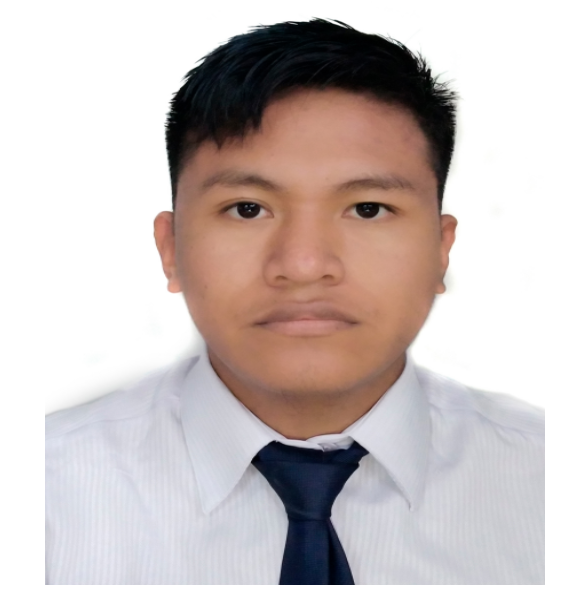
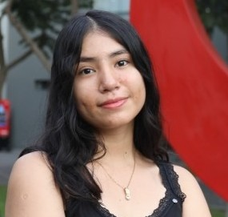

My name is Paolo César Guillen Luna, student of the Software Engineering degree at the UPC, I would like to specialize in testing, which is why apart from following the curricular framework of my degree I am also learning tools. for automated testing.

My name is Ricardo Barrutia, I am currently studying Software Engineering at UPC. I am passionate about the world of technological development and I am always looking to learn new tools that allow me to improve my projects. I consider myself an organized person, adaptable to different environments, and enthusiastic about working collaboratively.

My name is July Paico, I am a Software Engineering student at UPC. I consider myself a collaborative person, capable of working in a team. I really enjoy project management and organizing my time to achieve the proposed goals. In my free time, I usually learn new things through online platforms to strengthen my knowledge.

My name is Fernando Quispe, I am a proactive person who can contribute and lead team collaboration with the goal of a common achievement. I like software development and being able to contribute to society with what I am passionate about. My goal is to acquire knowledge in a clear way to be able to apply it in different projects, such as the current project.

My name is Fabiola Espinoza, I am 21 years old and currently studying Software Engineering at the Universidad Peruana de Ciencias Aplicadas (UPC). I consider myself a responsible, creative, and empathetic person, with strong skills in teamwork and collaboration with others. I have participated in programs such as Coder Bloom, 28h, and more. Currently, I am the coordinator of ACM Women UPC.